Maresia - São Paulo

Famosa pelas boas ondas para o surfe, Maresias ganhou ainda mais destaque após revelar o talento de Gabriel Medina, bicampeão mundial de surfe criado naquele mar. Maresias sedia diversos campeonatos e etapas dos circuitos de surfe. É um ótimo pico para os atletas das ondas, que encontram especialmente no Canto do Moreia (o canto direito da praia) condições para lindas manobras em São Sebastião. Quem quiser investir no surfe poderá alugar pranchas nas lojas da região e até mesmo tentar algumas aulas em escolinhas locais, como a do próprio Gabriel Medina.
O surfe é mesmo um dos grandes atrativos de Maresias, mas não o único. A praia é linda, extensa, com ampla faixa de areia, mar delicioso para banho, boa infraestutura, grande oferta de pousadas e noite muito animada! É lugar para chegar e ficar por muitos dias. Quem não abre mão de serviço à beira-mar encontrará em Maresias o local ideal para dias de férias. Se o que você busca é um lugar completo para descansar, pense em se hospedar em Maresias. Você não precisará sair de lá para nada.
Para ver toda a faixa de areia da Praia de Maresias, que conta com 5 km de extensão, faça uma paradinha no mirante à beira da BR－101 (sentido sul). Do alto será possível ver a grandiosa beleza de Maresias.
Atividades Recomendadas em Maresias:
- Elemento um;
- A Trilha Paúba;
- Centro Histórico de São Sebastião;
- Beco da Mulher Maravilha;
- Poço do Caetano;
- Mirante da Praia de Maresias;
- Arquipélago de Alcatrazes.
Restaurantes Mais Recomendados em Maresias:
- Recomendação de restaurante em Maresias:
Com variedades de peixes, carnes, frangos, massas e saladas, produzidas e aprimoradas através da habilidade de nossos cozinheiros em preparar uma degustação que privilegie ainda mais sua experiência.
Restaurante Ravenala.

- Recomendação de restaurante em Maresia:
Comidas com um foco de cardápios Italianos, Brasileiro, Francesa e Americano.
Restaurante Bambu Maresias Comida Artesanal;
- Recomendação de restaurante em Maresias:
Desfrute do nosso 'Camarão Badauê Crocante' - uma iguaria deliciosa da categoria 'Aperitivos'. Este prato traz camarões frescos e suculentos, cuidadosamente enrolados em fios de batatas crocantes.
Badauê Maresias;
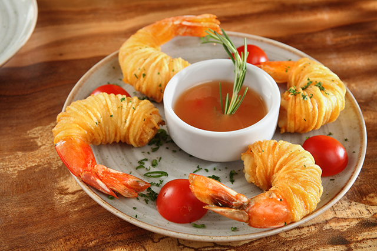
- Recomendação de restaurante em Maresias:
Serve comida brasileira e frutos do mar. O cardápio inclui uma variedade de saladas, entradas, pratos principais, petiscos e massas.
Terral Maresias;
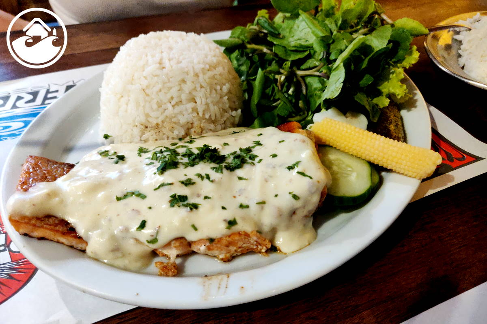
Praia da Fortaleza - São Paulo
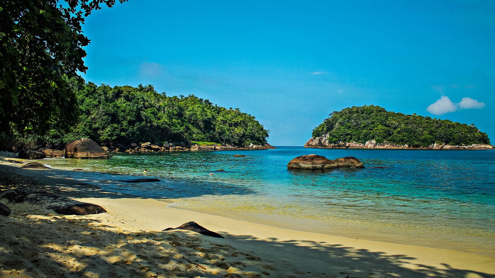
A Praia da Fortaleza, em Ubatuba, é um verdadeiro refúgio para quem busca tranquilidade e contato direto com a natureza. Localizada em uma área mais isolada e rodeada pela exuberante mata atlântica, essa praia preserva uma beleza selvagem e intocada, longe da agitação das praias mais turísticas da região. Seu acesso, feito por uma estrada de terra e uma curta trilha, pode exigir um pouco de esforço, mas a recompensa é uma das paisagens mais deslumbrantes de Ubatuba: águas claras e calmas, areia dourada e uma atmosfera de paz absoluta. Ao chegar, você se depara com um cenário perfeito para quem deseja relaxar e se desconectar do mundo, ouvindo apenas o som das ondas e o canto dos pássaros. A Praia da Fortaleza é um verdadeiro convite para quem quer vivenciar a natureza em sua forma mais pura, longe da correria do dia a dia. Se você procura um lugar tranquilo, onde o tempo parece desacelerar, essa é a praia ideal para se perder e se encontrar ao mesmo tempo.
Atividades Recomendadas em Praia da Fortaleza:
li>
Trilhas
Relaxamento e Banho de sol
Exploração das pedras e enseadas
Pesca artesanal
Restaurantes Mais Recomendados em Praia da Fortaleza:
- Recomendação de restaurante em :
A Mango Creperia é um bom lugar se você está procurando onde jantar e um restaurante barato em Ubatuba. É conhecida de todos: afinal, está na rua Guarani, em Itaguá (centro), há 14 anos. Foi montada por Guto de Paiva Ferreira, que cansou dos vinte anos no estresse da Bolsa de Valores e foi viver a vida mansa à beira-mar.
Site: Mango Creperia.
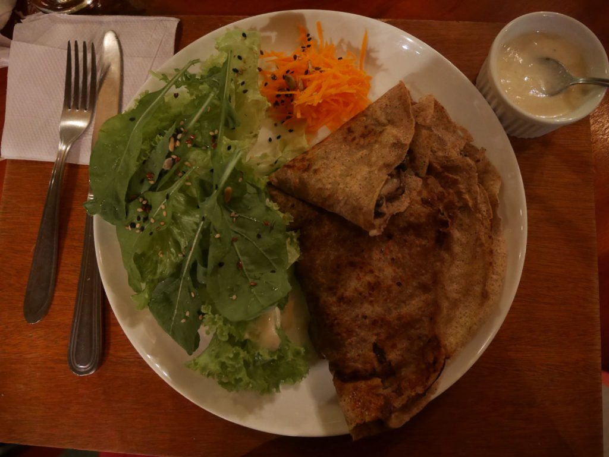
- Recomendação de restaurante em Praia da Fortaleza :
O Alecrim Restaurante oferece uma experiência gastronômica única, com pratos sofisticados que combinam sabor e frescor. Ideal para quem busca uma refeição deliciosa e um ambiente acolhedor em Ubatuba.
Site: Alecrim Restaurantes
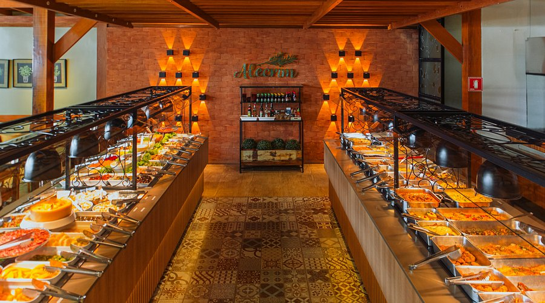
- Recomendação de restaurante em Praia da Fortaleza :
O Quintal da Villa é o lugar perfeito para quem deseja saborear pratos da culinária brasileira em um ambiente aconchegante e acolhedor. Com um cardápio recheado de sabores autênticos, é uma excelente escolha para quem busca uma experiência gastronômica única em Ubatuba.
Site: Quintal da Villa
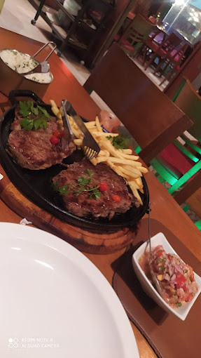
Trancoso - Porto Seguro
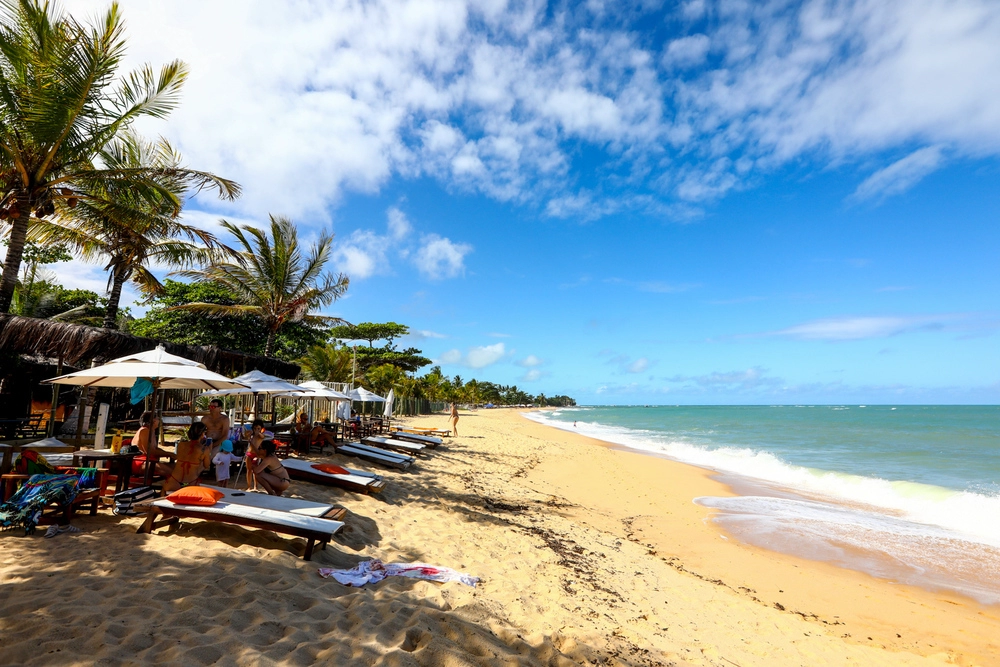
Trancoso, localizado no município de Porto Seguro, na Bahia, é um destino encantador que combina beleza natural, cultura rica e uma atmosfera tranquila. Fundada como uma aldeia de pescadores, a vila mantém um charme histórico, com destaque para a **Igreja de São João Batista** e a famosa **Praça do Quadrado**, que é o coração da cidade. Trancoso é conhecido por suas praias paradisíacas, como a **Praia dos Nativos**, a **Praia do Espelho** e a **Praia de Itapororoca**, que encantam com suas águas cristalinas e falésias coloridas. Além das praias, a gastronomia é um dos pontos fortes, com restaurantes que servem pratos da culinária baiana, como o **Café da Praia** e o **Restaurante O Cacau**. A cidade também oferece atividades ao ar livre, como trilhas, passeios de barco, e esportes aquáticos. Trancoso é um lugar de tranquilidade, mas também com opções sofisticadas de hospedagem, desde pousadas rústicas até resorts de luxo. É o destino perfeito para quem busca relaxar em um cenário de natureza exuberante, mas com conforto e estilo.
Atividades Recomendadas em Trancoso:
- Passeio de Caiaque ou Stand Up Paddle
- Fazer um Passeio de Buggy
- Visitar as Lagoas de Trancoso
- Fazer Compras no Mercado de Artesanato
- Apreciar o Pôr do Sol no Quadrado
Restaurantes Mais Recomendados em Trancoso:
- Recomendação de restaurante em Trancoso :
O Restaurante Capim Santo é outra dica. Está localizado em uma rua sem saída logo na entrada do Quadrado. Foi inaugurado em 1985, em um dia de Santo Reis, e é um dos melhores restaurantes de Trancoso. O restaurante foi fundado por um casal que esteve por aqui na década de 70, eles fizeram parte de um grupo que redescobriu Trancoso. Atualmente, o Capim Santo é comandado pela filha deles, a chef Morena Leite. O restaurante serve pratos saudáveis com ingredientes que só a Bahia tem. As receitas são originais e a base principal são os peixes e os frutos do mar.
Site: Restaurante Capim Santo

- Recomendação de restaurante em Trancoso :
O Restaurante Rabanete, antigo Portinha, é por quilo e os pratos são preparados no fogão à lenha. Localizado no Quadrado, o que te proporciona almoçar curtindo todo o encanto e o movimento do lugar. Se você gosta de refeições estilo Self-Service, vale a pena conhecer.
Site: Restaurante Rabanete
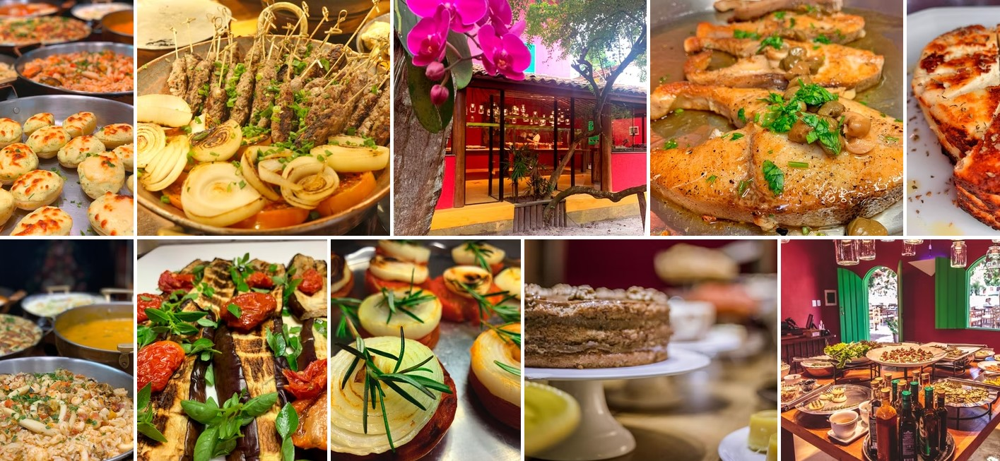
- Recomendação de restaurante em Trancoso :
Apostando por cardápios variados e confecções realizadas com os melhores ingredientes e produtos regionais e nacionais, o Restaurante O Cacau oferece seus serviços em buffet de casamento, catering, mesa de frios, mesa de doces e em toda a decoração personalizada do espaço. Aqui tudo é pensado de acordo com as necessidades e preferencias de seus noivos.
Site: Restaurante O Cacau
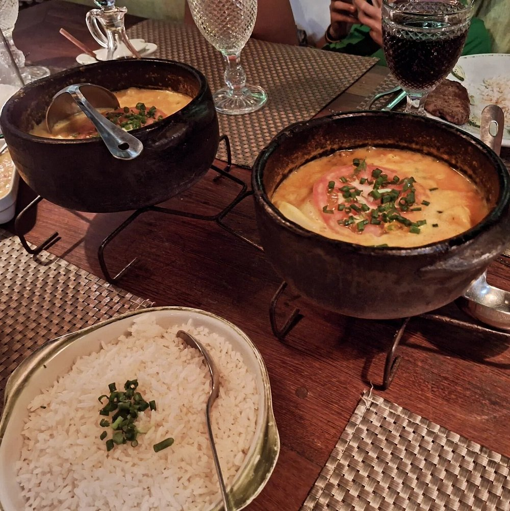
Praia do Espelho - Bahia
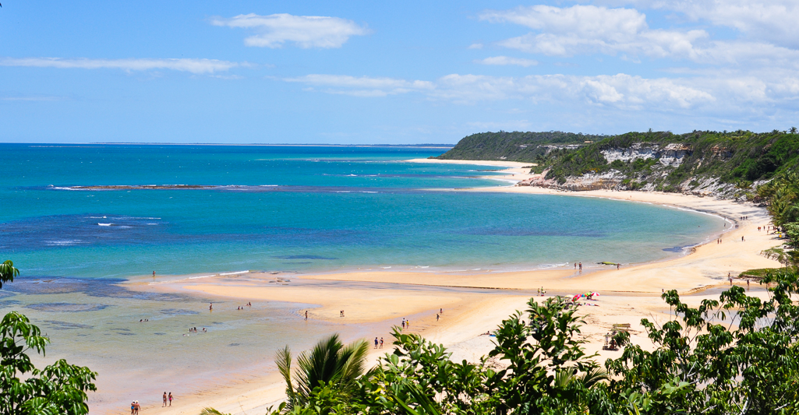
O pôr do sol na Praia do Espelho é, sem dúvida, um dos momentos mais especiais e inesquecíveis de Trancoso. À medida que o sol começa a se pôr no horizonte, o céu se transforma em uma paleta vibrante de cores quentes — o azul profundo da tarde gradualmente dá lugar aos tons de laranja, rosa e até roxo, criando um espetáculo visual que encanta a todos. O reflexo dessas cores nas águas calmas da praia intensifica ainda mais a beleza do cenário, fazendo parecer que o mar e o céu se fundem em uma só obra de arte.
A atmosfera tranquila e a paisagem deslumbrante tornam o momento perfeito para desacelerar e conectar-se com a natureza. Muitos visitantes aproveitam para caminhar pela orla ou simplesmente se sentar na areia, relaxando enquanto o espetáculo natural acontece. É um convite à introspecção, à contemplação e à paz interior, longe da agitação do dia a dia.
Além disso, a Praia do Espelho é famosa pela sua fauna marinha, e, se tiver sorte, você pode avistar golfinhos brincando ao longe, nadando nas águas calmas da baía. Isso adiciona uma magia extra à experiência, tornando o pôr do sol ainda mais especial. Em alguns dias, as cores do céu e a presença dos golfinhos criam uma sensação de conexão profunda com a natureza, como se o tempo tivesse desacelerado só para que você pudesse vivenciar aquele momento de pura beleza.
Para muitos, o pôr do sol na Praia do Espelho não é apenas uma experiência visual, mas um momento de tranquilidade e renovação, um lembrete da beleza simples e grandiosa do mundo natural. Sem dúvida, é uma das razões pelas quais essa praia é considerada uma das mais paradisíacas do Brasil.
Atividades Recomendadas na Praia do Espelho:
- Passeio de Caiaque ou Stand-Up Paddle
- Mergulho e Snorkel
- Visitar as Falésias
- Explorar a Vila de Espelho
- Passeio de Barco
Restaurantes Mais Recomendados na Praia do Espelho: :
- Recomendação de restaurante em Praia do Espelho:
O Café do Mar é um restaurante à beira-mar que combina sabor e ambiente descontraído. Oferece uma variedade de pratos com influências da cozinha baiana, com opções de peixes e frutos do mar frescos, além de uma linda vista para o oceano.
Site: Café do Mar Bar e Restaurante

- Recomendação de restaurante em Praia do Espelho:
Com um ambiente acolhedor e vista para o mar, o Restaurante Orixás oferece pratos da culinária baiana, com especialidades como frutos do mar e peixes frescos. É um ótimo lugar para quem busca uma experiência gastronômica local e de qualidade.
Site: Restaurante Orixas

- Recomendação de restaurante em Praia do Espelho :
O Canto do Sabiá é um restaurante tradicional que oferece uma experiência gastronômica com pratos típicos baianos, destacando-se pelos frutos do mar frescos e uma atmosfera acolhedora e tranquila.
Site: Canto dos Sabia

Praia do José Menino - Santos

A Praia do José Menino, localizada em Santos, é um destino ideal para quem busca uma atmosfera tranquila e familiar. Entre as praias do Gonzaga e da Ponta da Praia, ela se destaca pela sua beleza natural e ambiente acolhedor. Com águas calmas, é perfeita para quem deseja relaxar ou praticar atividades como stand-up paddle e caiaque. A praia conta com uma boa infraestrutura, oferecendo quiosques, bares e restaurantes à beira-mar, onde os visitantes podem saborear frutos do mar frescos e petiscos enquanto apreciam a vista. Sua orla também é equipada com ciclovias e calçadão, proporcionando um ótimo espaço para caminhadas e passeios.
A Praia do José Menino é de fácil acesso e está perto de pontos turísticos importantes da cidade, como o Museu do Surf, o Aquário de Santos e o Centro Histórico. Além disso, a vista para o Porto de Santos e para o mar aberto confere um charme especial ao local, com o movimento dos navios e o cenário portuário, que contrastam com a tranquilidade da praia. Carregando o nome de José Menino, uma figura importante da história local, a praia também tem um significado cultural e histórico para os moradores de Santos.
Em resumo, a Praia do José Menino é uma excelente escolha para quem busca um lugar sossegado para relaxar, caminhar pela orla ou simplesmente desfrutar de um dia tranquilo à beira-mar. Sua beleza natural e infraestrutura tornam-na uma das praias mais agradáveis de Santos.
Atividades Recomendadas em Praia do José Menino:
-
Caminhadas no Calçadão
- Praticar Stand-Up Paddle ou Caiaque
- Frescor de Vôlei ou Futebol de Areia
- Relaxe na Areia
- Visitar o Museu do Surf
Restaurantes Mais Recomendados em Praia do José Menino :
- Recomendação de restaurante em Praia do José Menino :
Localizado bem na beira da praia, o Quiosque do Sabiá oferece um ambiente descontraído com uma vista linda para o mar. Ideal para quem quer saborear petiscos à base de frutos do mar, como camarões e iscas de peixe, enquanto desfruta de uma bebida gelada.
Site: Quiosque do Sabiá

- Recomendação de restaurante em Praia do José Menino :
O Tio Sam é uma opção popular para quem deseja curtir o visual da praia enquanto aproveita um almoço ou lanche. O cardápio oferece diversas opções de pratos à base de frutos do mar, como moquecas e camarões, além de petiscos e pratos tradicionais de praia.
Site: Restaurante e Quiosque Tio Sam

- Recomendação de restaurante em Praia do José Menino :
Outro lugar agradável para quem deseja degustar frutos do mar frescos em um ambiente descontraído. O Bar do Zé oferece pratos simples e saborosos, com destaque para as porções de peixe e camarão. A comida caseira e o atendimento simpático fazem o local se destacar.
Site: Bar do Zé
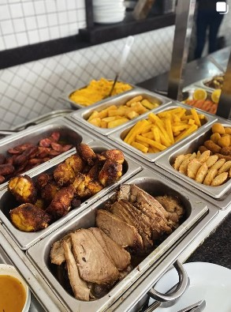

Cuidados com o Verão
Para aproveitar o verão nas praias, é importante tomar alguns cuidados,como usar protetor solar, manter-se hidratado.
- Fique longe do limão
- Abuse do protetor solar (e de roupas com fotoproteção)
- Tenha cuidado com a alimentação
- Evite nadar logo após comer
- Não fique muito tempo com roupa de banho molhada
- Não esqueça e proteger os olhos
- Cuidado com a bebida alcólica em excesso
- Não esqueça de beber água
Dicas para não perder crianças na praia
Em praias movimentadas, é essencial ficar atento às crianças. Algumas dicas incluem estabelecer um ponto de encontro, identificar as crianças com pulseiras...

Outras 8 dicas:
- Mantenha um ponto de encontro definido.
- Use pulseiras de identificação nas crianças.
- Ensine às crianças seus nomes completos e números de telefone.
- Esteja atento à localização das salva-vidas.
- Evite praias muito movimentadas.
- Incentive as crianças a não se afastarem muito.
- Use uma barraca ou guarda-sol colorido como ponto de referência.
- Esteja ciente dos arredores e identifique pontos de referência fixos.
Pensando em Viaja?
Então veja nossas recomendações e aproveite nosso cupom de desconto.
Veja também..

Praia do José Menino
A Praia do José Menino, em Santos, é tranquila e charmosa, ideal para quem busca sossego e boa infraestrutura. Com águas calmas e ótima para famílias, oferece quiosques e um ambiente relaxante. Além disso, a vista do Parque Roberto Mário Santini é incrível, tornando a praia um ótimo lugar para passeios à beira-mar. Uma excelente opção para quem quer fugir da agitação das praias mais movimentadas.

Praia do Góis
A Praia do Góis, em Santos, é uma praia tranquila e menos conhecida, perfeita para quem busca sossego. Ela tem um ambiente mais reservado e é ideal para quem deseja fugir das praias mais movimentadas da cidade. A praia conta com águas calmas e uma boa infraestrutura com quiosques e opções de lazer, além de ser um ótimo local para relaxar e curtir a natureza. É uma excelente escolha para quem procura um refúgio mais pacífico em meio ao movimento da cidade.